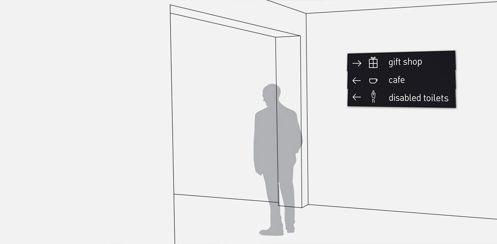
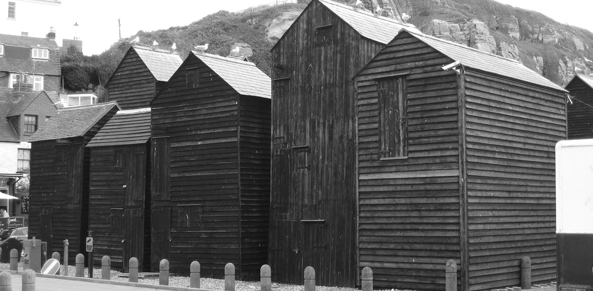
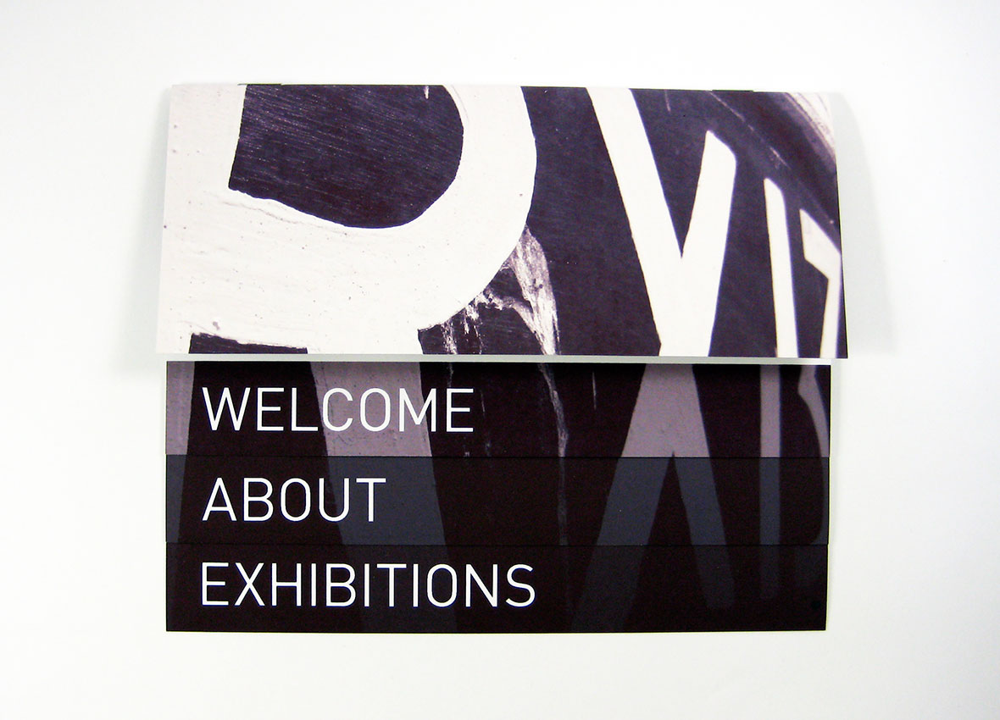
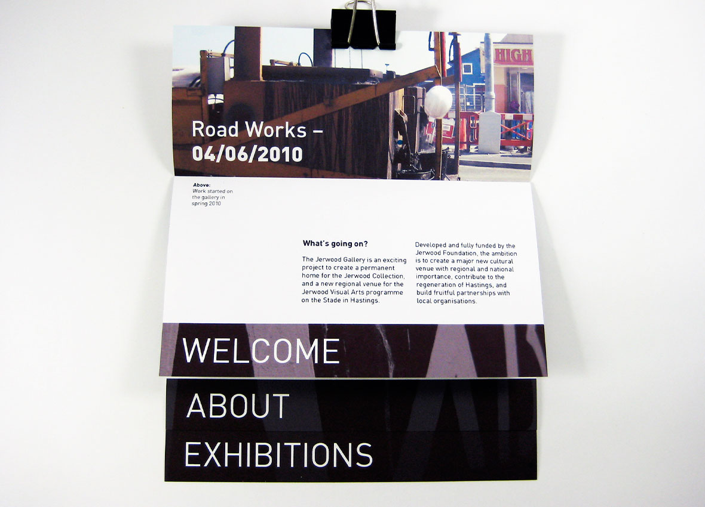
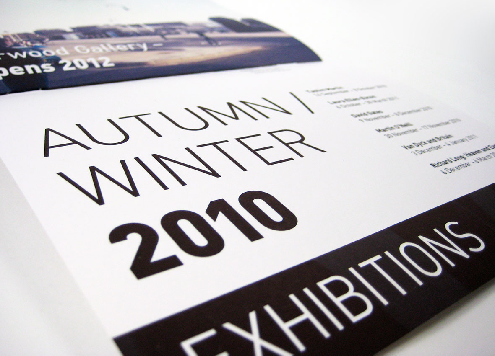
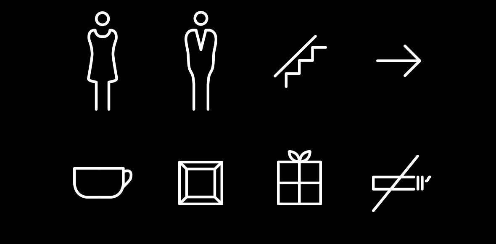
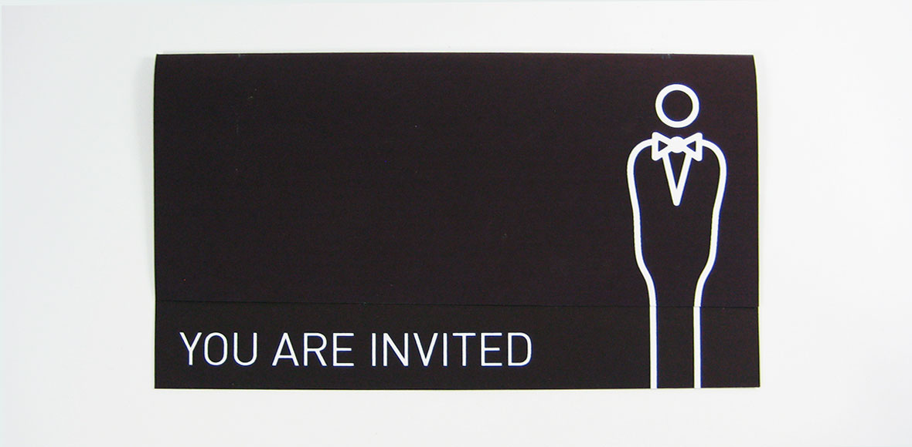
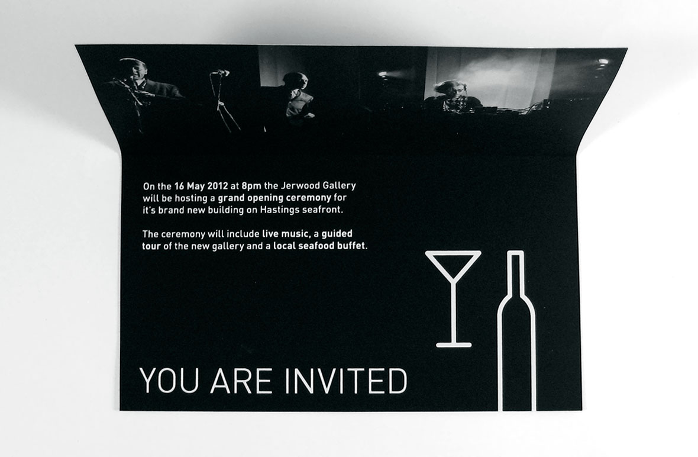
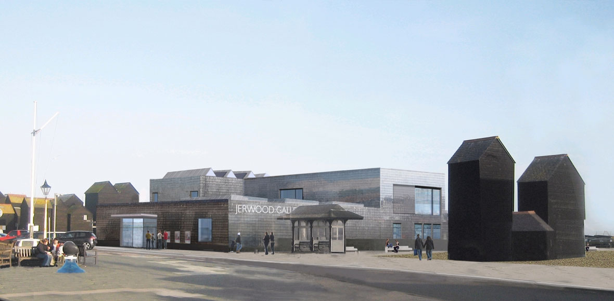
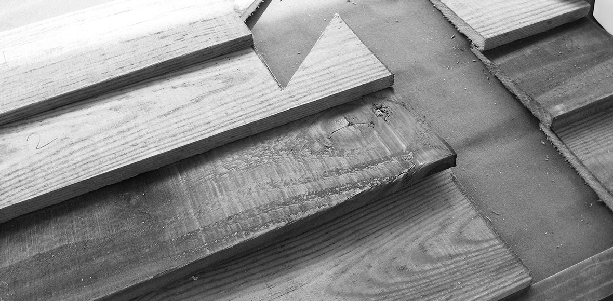

The Jerwood Foundation owns the largest and most important private collection of contemporary art in the UK. After years behind closed doors, the collection now has a permanent home amongst the fishing fleet in Hastings old town.
I worked with the directors of the foundation to develop a design language for the gallery that would reflect it's unique, historical surroundings. This was manifested in a proposed wayfinding and promotional system
The system is based around the cladding found on the neighbouring fisherman's net huts. Not being local to the area meant the Jerwood received a lot of opposition — paying homage to it's surroundings was a way of rebuilding bridges.
      I demonstrated the wayfinding system by building a prototype from local wood, using a combination of vinyl and silkscreen to apply the information
 